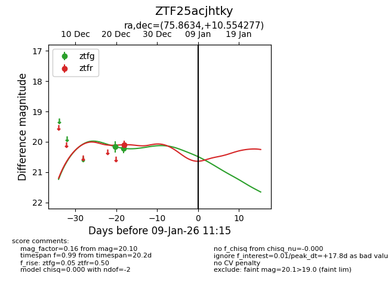
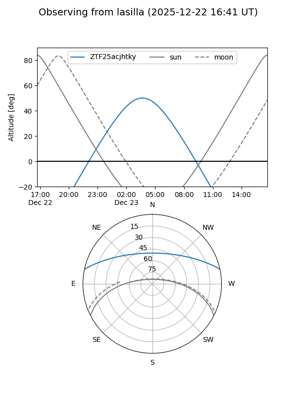
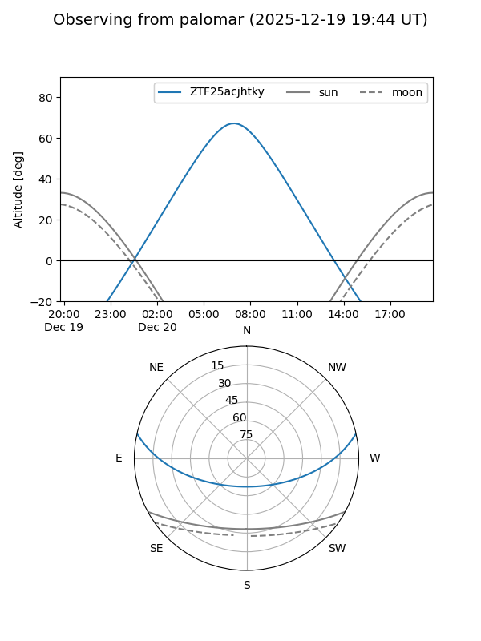
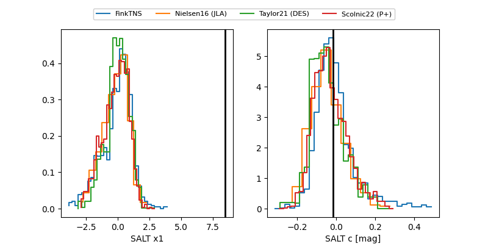

ZTF25acjhtky
Target ZTF25acjhtky at 2025-12-22 16:31
Aliases and brokers:
FINK: fink-portal.org/ZTF25acjhtky
Lasair: lasair-ztf.lsst.ac.uk/objects/ZTF25acjhtky
ALeRCE: alerce.online/object/ZTF25acjhtky
alt names
ZTF25acjhtky (ztf,fink_ztf)
Coordinates:
equatorial (ra, dec) = 75.8634,+10.55428
equatorial (HMS+DMS) = 05:03:27.22,+10:33:15.40
galactic (l, b) = (190.2277,-18.27848)
Flags:
Photometry:
last ztfg=20.21
2 ztfg detections
Lightcurve

Visibility


Additional plots
